Responsive Web Design in Adobe XD
Plan information architecture
Information architecture organizes content to help users understand where they are in a product and where the information they want is.
It’s important for UX designers to understand information architecture (IA), which organizes content to help users understand where they are in a product and where the information they want is. Information architecture is the roadmap for users to get everything they need from the product you’re designing.
Information architecture is all about organizing the contents of your designs for excellent user flow. IA requires you to know the users you’re designing for and their goals, behaviors, and expectations about products like yours.
To learn more about IA, review this video about the basics of information architecture from earlier in the certificate program. Then, check out this guide from Adobe XD called The Beginner’s Guide to Information Architecture in UX or this article from UX Planet about the basics of IA for designers.

Site structure
There are four common site structures, each of these structures is unique and serves a specific purpose.
-
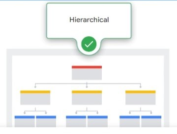
Hierarchical model is one of the most popular website structures. It's a top-down approach to structure that starts with top level categories of information referred to as the parent level. Then content is narrowed into more detailed information called the child level. The structure is very similar to a family tree, which is what the parent and child level terms are based on.
The first page of a hierarchical website is the homepage, where users start. This is represented by the page 1 at the top of a tree. The next level contains pages for the main categories of content. On a website, these categories usually appear in a navigation bar at the top of the homepage. This is represented by pages 2, 3, and 4 in the diagram. Often when you hover your mouse over one of the categories in the navigation bar or click on that category, a list of additional pages within that category appears.
Each of these pages is considered a child of the parent category. For example, Page 5 and Page 6 are considered child pages of Page 2. Hbo.com is a good example of the hierarchical model. The website homepage offers main categories like series, movies, and docs at the parent level across the top of the homepage. If I click on one of the category pages like "series," the site offers sub-category pages at the child level, like featured series, specials, and sports.
You might have guessed that the hierarchical model gets this name from the word hierarchy. In UX design, hierarchy means organizing your content by importance. What's the most important, and what's the least important? How do you connect this content together?
-
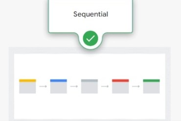
Sequential model is a website structure that leads users through a step-by-step process. Sequential websites order their pages from a starting page to an end point, sort of in a line. Users start on the site's first page and click a link or button to go to the next page in the order. Users continue this pattern, clicking through the pages in order until they've reached the last page.
In a true sequential structure, like an online survey, users aren't able to navigate to pages out of order. They can navigate between the next, and previous page but they aren't able to skip over pages or go to a home page.
So think of this: Have you ever tried to find car insurance online? Almost all insurance sites are sequential forms to get a quote. The purpose of each page in a website that uses a sequential structure is to get users to the next step in the sequence, moving them toward an end goal.
-
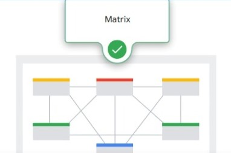
Matrix matrix model is a structure that allows users to follow their own path, since content is linked in several different ways. Users can navigate to any page and matrix model website and still be able to access all of the other pages as well. This allows users to explore the site freely.
Because all the content links to each other, the matrix model is sometimes referred to as the web model. Think about the homepage of a news website. Chances are the website has a navigation menu at the top, the most recent content front and center on the page, and then other news stories sorted into linked categories below. If you click on a news story, you'll find other related articles linked throughout the article. For example, if you're reading about a new star in a local zoo, you might find that a related story about an animal rescue is hyperlinked within the text. Other articles that might interest you are usually included at the bottom or to the side of the page too.
Try pulling up your favorite news website now to check this out. One pro tip to keep in mind, this matrix model structure is considered outdated by some UX designers. Matrix models don't provide a great user experience because they can be tricky to navigate if you don't already know what you're looking for. Despite this, matrix models are still in use by many popular websites that want users to interact with a lot of the website's content, instead of sending the user on a specific journey.
-
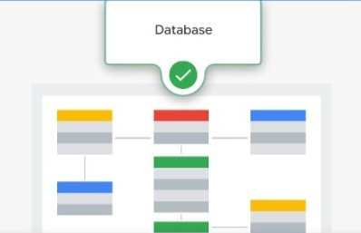
Database model is a website structure that mixes a database, or an organized collection of information, with search functionality. A database model creates a dynamic experience for users that includes advanced filtering and search capabilities.
Think about your favorite social media network. Most social media sites have the ability to post content with tags, like a location, that categorizes the content. Users can search for content using these tags. Or think about the Google Maps website. When you land on the homepage, the main option you are presented with is to search the database for an address or a category of locations like restaurants.
Advantages:
- users have expectations for how websites work based on their prior experience using other websites. Site structure models, like the four we just discussed, make sure that your website meets those user expectations;
- structure models improve navigation of websites as they add organization. Following a website structure model makes it easier for you as a designer to build in logical cues that orient and direct your users;
- structure models have been tested over time and have proven their effectiveness. They've evolved based on feedback from users and designers. They allow you to start building websites more quickly and efficiently too, since you aren't spending time inventing a structure from scratch.
Site map
A sitemap is a diagram of a website or an app that shows how pages are prioritized, linked, and labeled.
- When planning your website in its early stages, is important to create a clear organizational path. By mapping an outline, you can see which areas of your site may require more elaborate connectivity to help users reach the necessary pages. It's also a great way to see all of your pages as a whole, in the order they will appear on your site to users. You might spot necessary pages you've forgotten, or realize you need to remove and condense pages.
- Besides helping users move from page to page, sitemaps help search engines index your website. If you ever wondered how a search engine like Google knows about all of the websites it lists on a search results page, this is how. Sitemaps tell Google what the site is about and what content it includes. The indexing process makes sure sites are searchable and available to a whole new set of users — users that may not have found your website on their own.
- A clear organizational structure is also important for accessibility. Users of all abilities, identities, and experiences need to be able to successfully move through a website's design. Sitemaps create an organized flow that takes your users from one task to the next. This is especially important for any users interacting with your site using assistive technology. Organizing your site using a clear structure allows all site visitors, including those using assistive technologies, to navigate your site more efficiently.
As you create a sitemap, the first step is to think about pages that are commonly found on websites. The second step is to recall information you already know about the users.

Read more, How to create a UX Sitemap: a simple guideline, Sitemaps & Information Architecture (IA), 5 Visual Sitemap Examples for Website Designs
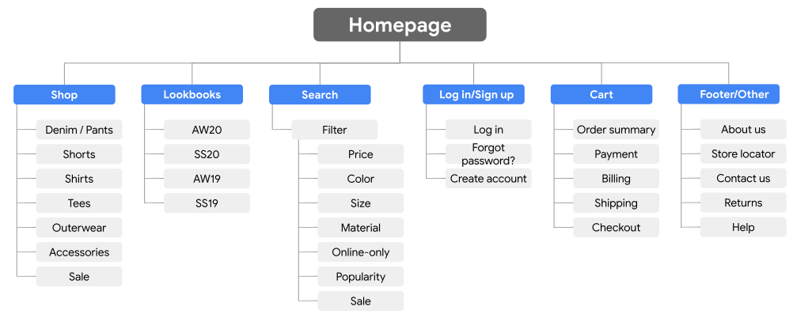Common website layouts
-
Single column layout
The single column layout features just one column for the website’s content, which makes it one of the simplest layout options. Single column layouts are often the standard design for mobile versions of responsive websites, since mobile phone screens are narrow and don't have space for multiple columns of content. In addition, a single column layout allows for easy scrolling on mobile phones.
Single column layouts can be used on laptop and desktop-sized websites, too. This layout is especially good for emphasizing one main element on a page, like a logo, a video, or an entire block of text. Keep in mind that with a single column layout, elements tend to be organized logically. Websites that use this layout usually feature navigation at the top of the page, followed by content, and then a footer at the bottom of the page.
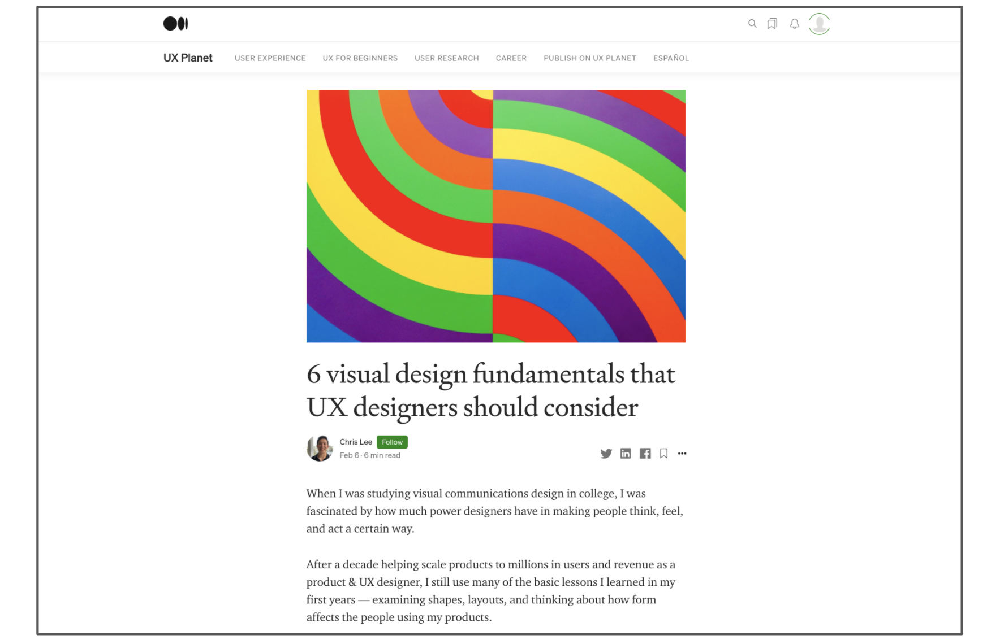 -
Multicolumn layout
The multicolumn layout has two or more columns for content. Many desktop websites use multiple columns to make the most of the space on the screen. When you're designing a responsive website in this course, the mobile phone sized version of your website might use a single column layout, while the desktop sized version might use a multicolumn layout since there's more space to add elements.
When you design a website with multiple columns, keep top-of-mind the visual design elements and principles that you learned earlier in the certificate program. For example, you'll want to lay out elements within each column based on hierarchy, color, and variety. One pro tip: On many multicolumn websites, one column of content on the far left or right is used for ad space.
Websites that use a multicolumn layout usually have a clear focal point, which is a specific and distinct area of the website that captures users’ attention. In this example, the focal point is the article at the top of the page that's emphasized with a colored rectangle and large hero image.
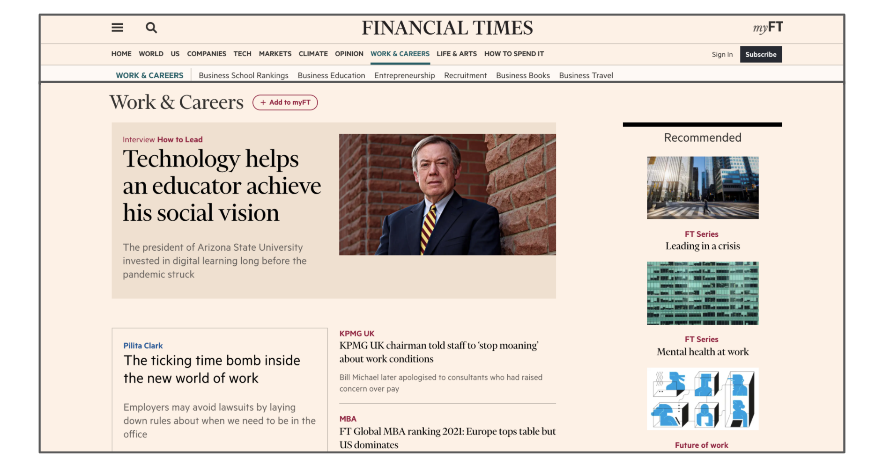 -
Box layout
The box layout consists of boxes or squares of various sizes and proportions. This layout is typically found on homepages of websites and is a great way to organize multiple elements. When boxes are the same size and they're evenly spaced, users will give boxes equal importance. Alternatively, some boxes can be larger or spaced apart from the rest to draw the user's attention to that box, which might show a specific image or item.
-
Box layout
The box layout consists of boxes or squares of various sizes and proportions. This layout is typically found on homepages of websites and is a great way to organize multiple elements. When boxes are the same size and they're evenly spaced, users will give boxes equal importance. Alternatively, some boxes can be larger or spaced apart from the rest to draw the user's attention to that box, which might show a specific image or item.
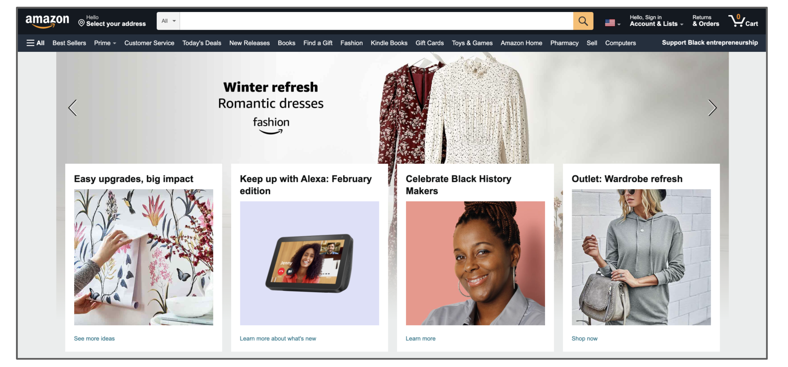 -
Featured image layout
The featured image layout places the user’s focus on a single image or video that often takes up the entirety of the page. Because of this, the featured image layout is often referred to as a single image layout.
The featured image layout is popularly used on websites that want to create a strong first impression, because humans are naturally drawn to images. When using this layout, make sure the featured image or video is tied to the product’s message and is high in quality. The featured image layout is often accompanied by a fixed or “sticky” top navigation bar that stays in place as users scroll down the page.
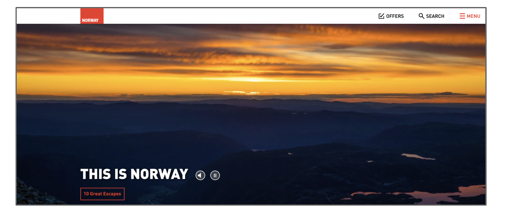 -
Asymmetrical layouts
Asymmetrical layouts are purposefully imbalanced between different sides of a page to draw emphasis. This website layout can be useful to highlight certain design elements, like images or text headlines, or to divide content by order of importance.
The success of asymmetrical layouts relies on natural eye-tracking patterns. An eye-tracking pattern describes the way in which users with typical vision follow content down the page of a website. Two common asymmetrical eye-tracking patterns are F-shape and Z-shape.
-
F-shape eye-tracking pattern
An F-shape eye-tracking pattern means that users will likely browse content on the page following the shape of the letter F. Laying out the page of a website following the F-shape eye-tracking pattern is useful when presenting lots of material, like text, since users scan information based on hierarchy.
This layout is commonly used on search results pages or on text-heavy pages, like this web page from Wikipedia about the poet Stesichorus. On pages like this one, most users will not read to the bottom of the page, so it's important to put the most important information at the top of the page. In this example, the most important information includes a summary about Stesichorus. Then, users can review the subheadings down the page to navigate to information that's most relevant to their needs.
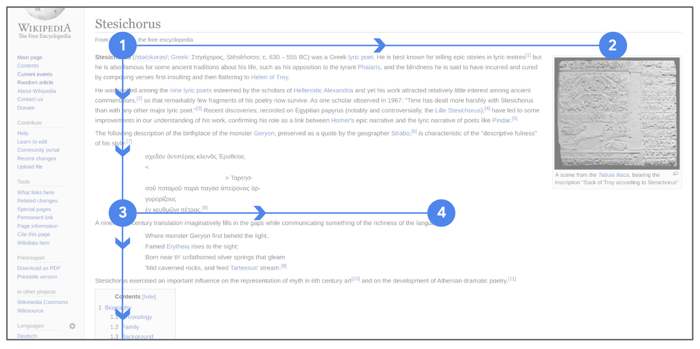 -
Z-shape eye-tracking pattern
A Z-shape eye-tracking pattern means that users will likely browse content on the page following the shape of the letter Z, for users who read from left to right. A website layout following this natural pattern draws the user’s eyes to all of the information on the site, based on the order of importance.
Here is an example of the Z-shape eye-tracking pattern in action on Dropbox's website . The user flow moves from left to right, then back to the left again. Images guide users between pieces of information, giving their eyes time to rest and allowing them to easily scan for important information.
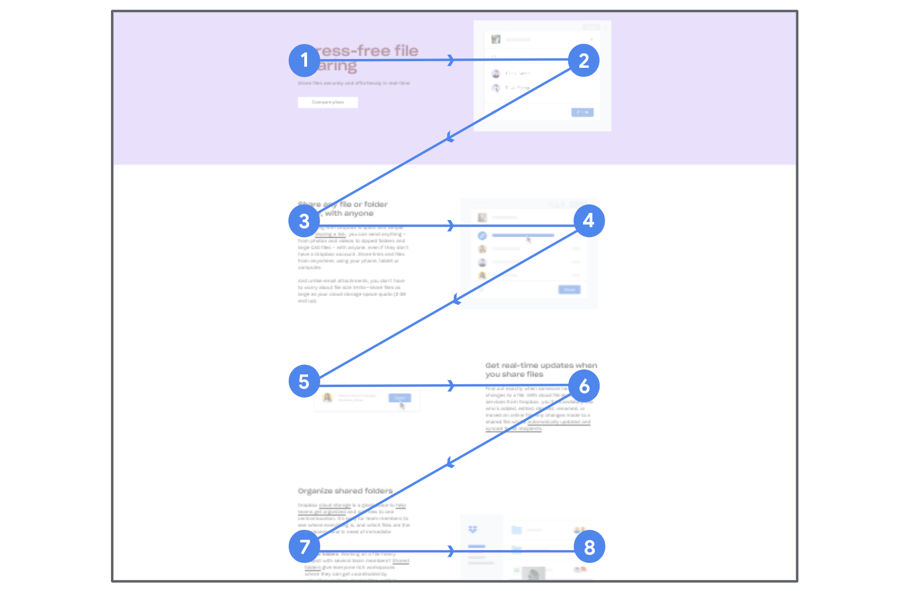
-
-
Grid of cards layout
A grid of cards layout features a series of cards that provide previews of more detailed content. A card is a rectangular shape that includes short, related information. Think of it like a playing card's shape and size, but in a digital design!
At a glance, the grid of cards layout might seem similar to the box layout, but the two are actually quite different! In the box layout, each box is its own independent item. In the grid of cards layout, cards are correlated together within the same interrelated list. Think of the box layout as separate posters for TV shows in different genres, while the grid of cards layout is a collection of comedy movies.
A grid of cards layout usually previews detailed content. This layout is often found on cooking blogs, streaming services, and other content-heavy sites, like YouTube and Pinterest. In a grid of cards layout, the cards are usually similar in size. The size of the cards can adapt to the screen size you're designing for, which makes cards great when designing responsive websites.
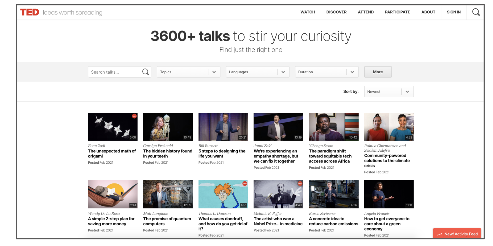 -
Tiered layer cake layout
A tiered layer cake layout has individual rows, or layers, that are stacked on top of one another. Within each row, there can be different numbers of columns, and they don’t have to be consistent.
The tiered layer cake layout is often used in responsive website design, because it adapts to the user’s screen size. The layers shift based on the device being used. For example, check out the grocery store website QFC in the images below. On the left, the desktop version of the website uses a tiered layer cake layout. But on the right, the mobile version of the website has only one column to better fit the screen size.
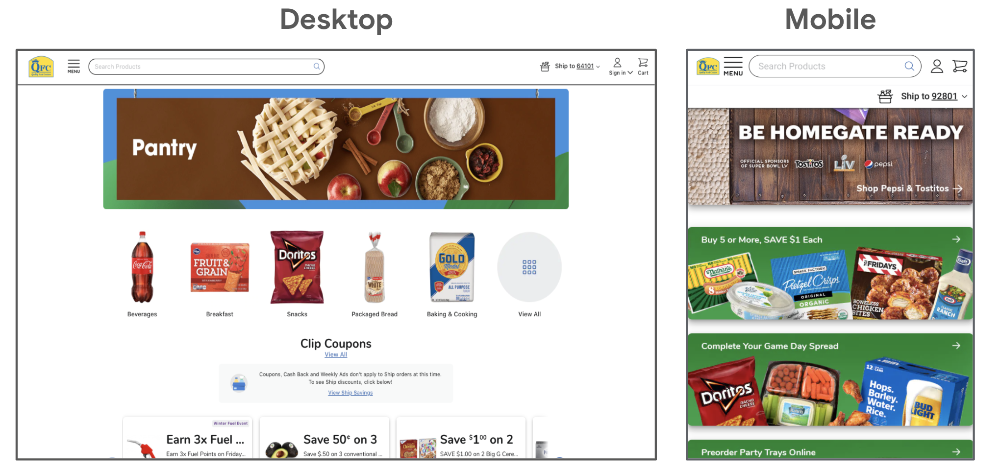
Wireframes
Wireframes help establish the basic layout of a screen. A layout is the structure that supports how visual components on a page are arranged, like images, text, and icons. You can apply everything you just learned about common website layouts when you create wireframes for your responsive website.
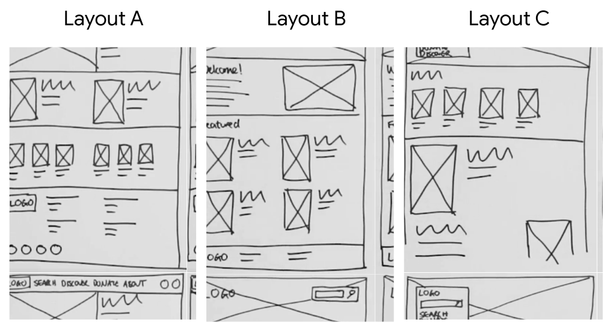Plan responsive web pages
Responsive web design adapts easily to any screen, which increases the usability of a webpage. This creates a positive user experience for people visiting the site, regardless of the platform they are using. Since designers don’t have to design a website for every device size, it also saves them time and resources! Furthermore, responsive web design drives mobile traffic because a lot of users access the web from their mobile devices.
Responsive web design drives mobile traffic to the website. After all, not everyone will be visiting a website from a desktop computer. A website should be viewable and accessible to users regardless of the platform they are using. This will create a positive user experience, and save designers time and resources from having to design for every device size.

Behind the code of the website are parameters called breakpoints. Breakpoints are the visual limits that determine when a responsive layout should change to fit all the elements and components properly. In other words, if you adjust the shape of a browser window on your computer to a vertical rectangle, the website will eventually shift to the mobile version of the site.
As you plot your own designs on grid paper and resize the layout for different screen sizes, ask yourself these questions:
- Do elements on the page need to move location? As you move from a large screen size to smaller screen sizes, which parts of the design need to stay above the fold? Which can move down the page, to below the fold?
- How do images need to be scaled? Are there certain images, like a hero image, that need to remain large across all screen sizes?
- How will you adjust the navigation elements for the page as the screen size changes, such as moving from a top navigation bar to a hamburger menu?
Read more Responsive Design, 11 powerful examples of responsive web design
Common elements used in responsive design
Designing a responsive website requires that you know how to scale elements to make the best use of available screen space, from a desktop computer to a mobile phone. Adjusting your designs based on the size of the screen might mean using different amounts of text, utilizing icons, scaling the size of images, and more. As you begin to create your own responsive designs, here are some common elements and components that you can use.
- Hamburger menus are often featured in mobile versions of websites, because a lot of text can be placed inside of the list, which keeps the main pages of the design clean. In other words, a desktop version of a website design might have a top navigation bar that lists text horizontally across the screen, but a mobile phone screen size doesn't have room for this text, so it's placed within a hamburger menu.
- Cards are also helpful when creating responsive designs because they can be easily arranged in predictable ways across devices. Each card can contain a similar amount of information from desktop to mobile designs, since little content is included. But desktop designs might include five columns of cards, while mobile designs might include only two columns of cards.
- Carousel can be scaled to fit the size of the device. On desktop, carousels can be large or even take over an entire page, like a traditional slideshow would. On mobile, images within a carousel are smaller or might even change to a more compact shape, like a square instead of a rectangle.
- Call-to-action (CTA) button is an interactive and appealing button that invites users to click on it. As shown in the image above, CTA buttons are usually emphasized in a design by using a different color or font than the rest of the design. CTA buttons are used across all screen sizes in responsive design. But their appearance and function depends on each device. For example, CTA buttons might occupy more space on mobile devices than on desktop. CTA buttons might also be more interactive on mobile devices with touch screens, since they allow for more nuanced gestures beyond a simple click.
Read more Responsive design techniques, 5 UI Patterns: Navigation That Makes Good UX Sense, Navigation design: Almost everything you need to know

Adobe XD Learn & Support, WIREFRAMING, Wireframe Examples for Websites and Mobile Apps, Create repeating elements
Accessibility in responsive design
There are a few features to include in your wireframes to ensure that people using assistive technology have a great user experience.
- Headings are titles or subtitles that stand out at the beginning of a paragraph, article, section, or another area of a website. Header text is often larger and bolder than the text on the rest of a page and designates the beginning of a section. Headings can be used to label menus, page titles, subtitles, and other related structures on a page. One reason it's important to make sure headings are clear in your designs, is because all users can benefit from headings. Headings support visual hierarchy, as well as support efficient navigation for users of screen readers. Screen readers can navigate a webpage through headings, which allows users to listen to a list of all headings, or jump to a desired heading, to begin reading at that point on the website. Users can use the screen reader headings menu to move around to key sections of the webpage.
- Landmarks are features used to map out regions of an interface. Headings, which we just discussed, serve a similar purpose to landmarks. Landmarks are used by assistive technology, like screen readers, to provide cues for navigation, allowing users to efficiently move from one section to another. Common landmarks include navigation bars, search boxes, fixed sidebars, and footers. Much like landmarks in real life, these objects or sections stand out from the rest of the page to help users navigate through a website. For example, iOS devices utilize the voiceover screen reader. It features a rotor that users can control by pressing the keys Ctrl+Option+U. This rotor tool allows users to browse webpages and switch between landmarks and headings for ease of navigation.
- Initial focus is how you attract a user's attention to help them accomplish a task. If your webpage requires the user to do several things, it's best to direct focus to the top of the page, or to the first H1 heading. To understand how this is used in real life, let's check out the Google homepage. The homepage of Google Search features the search bar at the center of the page below, a single hero image. This positioning ensures the user's attention is directed toward the search function. But the idea behind the initial focus isn't just to attract the user's attention; focus can also help define the primary tasks or actions you want the user to take. Although there are other links on the Google search page, defining the search bar as the initial focus supports the central purpose of the page. In general, the less clutter there is on a webpage, the easier the interface is to navigate. Otherwise, a user might experience cognitive overload, too much information, or too many tasks simultaneously, resulting in the user not being able to complete the task.
Revisit visual design
Review how to arrange elements in mockups
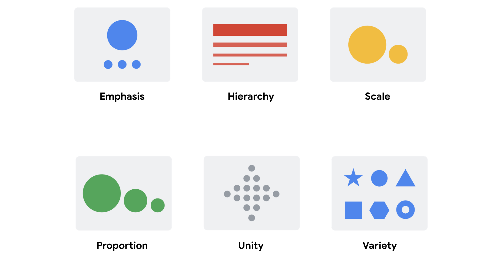 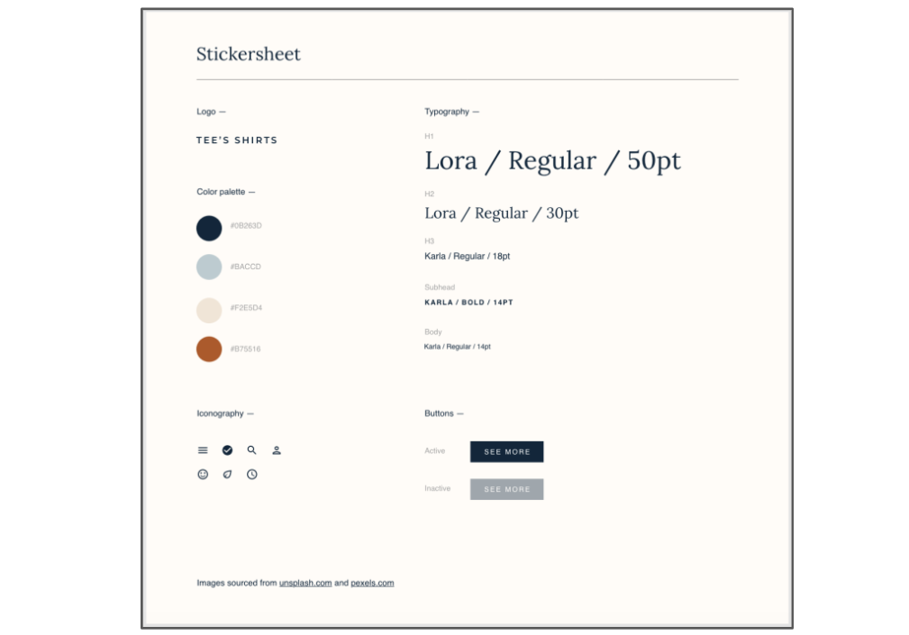Designer's portfolio examples:
Job opportunity: Design Gigs for Good, Glassdoor, ZipRecruiter
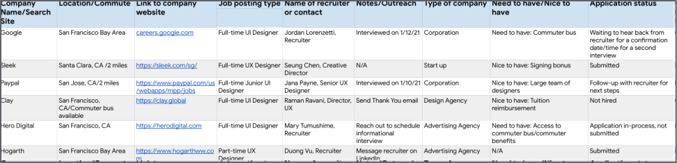Elements in a typical UX design resume:
10 Amazing Designer Resumes that Passed Google’s Bar
Figma Exercise: How to design a resume
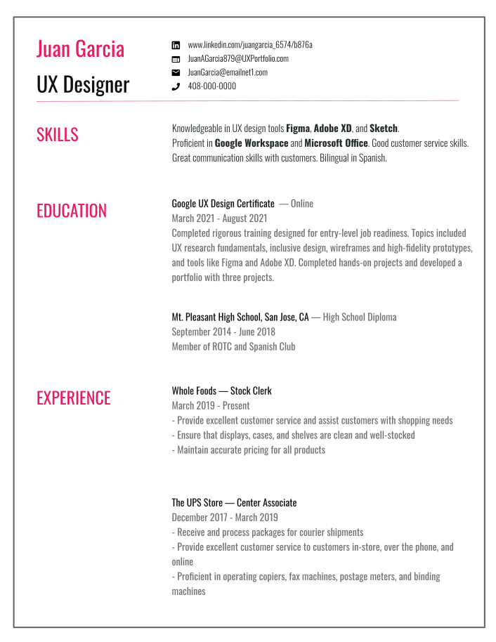Update a resume based on job description
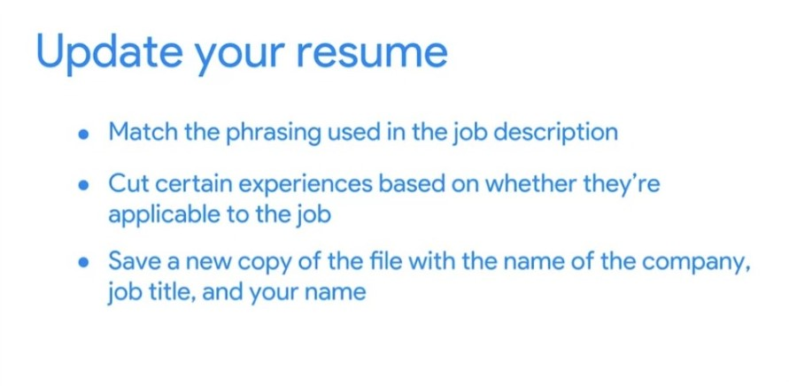